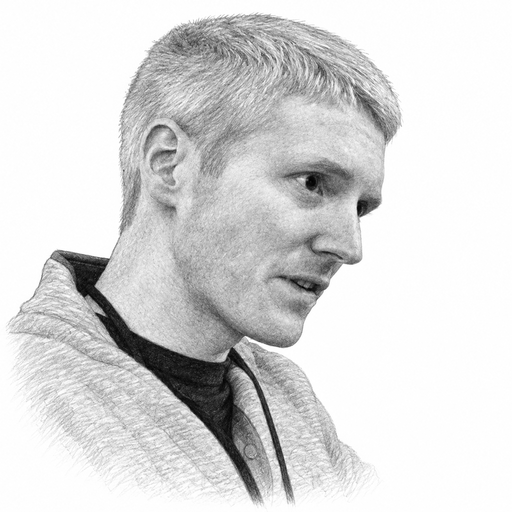
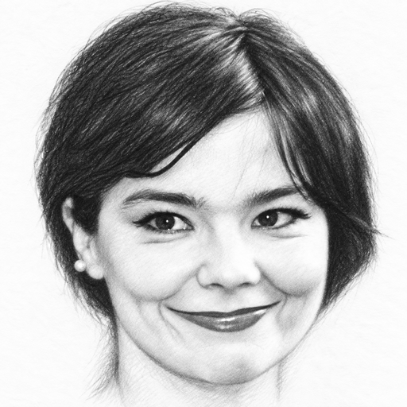
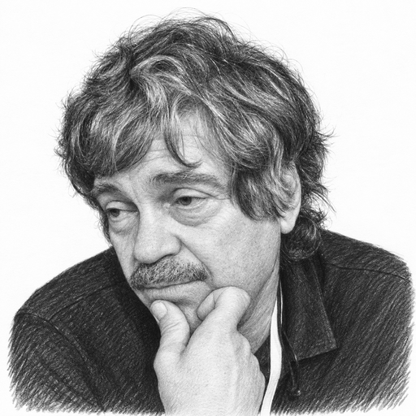
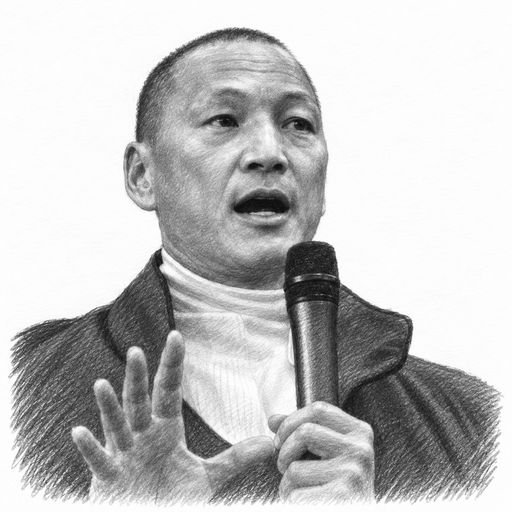
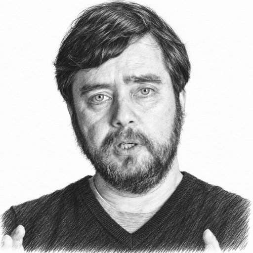
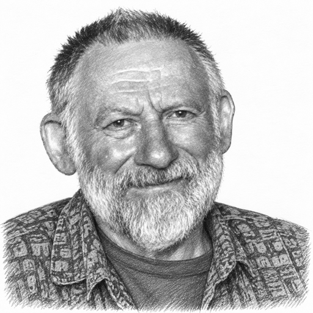
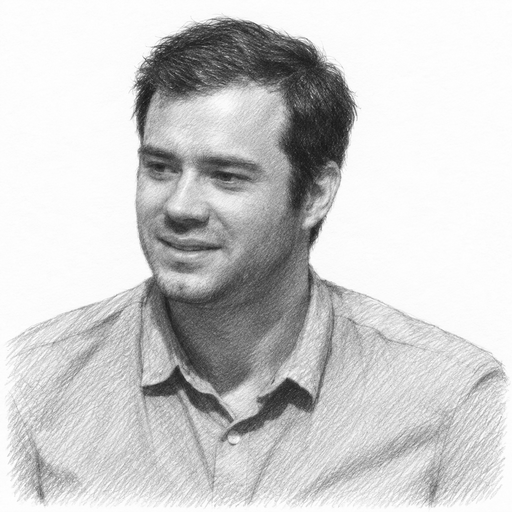
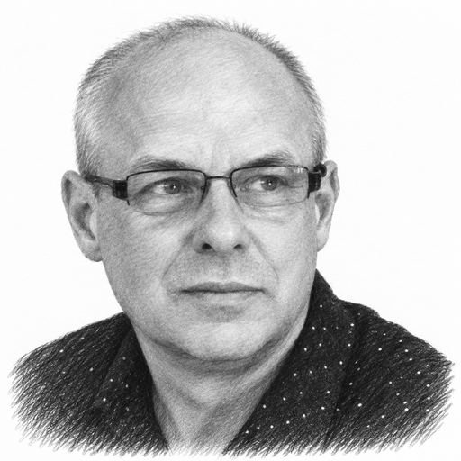

These AI-assisted illustrations accompany independently assembled public example indexes. They do not imply participation or endorsement by the people depicted or the photographers.

Patrick Collison
Source image by Village Global. Original photograph and attribution.
Cropped and prepared with the local shaded-pencil helper, then refined as an AI-assisted graphite illustration. Background simplified; resized for display.
Photograph and illustration: CC BY 2.0.

Björk
Source image by Georges Biard. Original photograph and attribution.
Cropped and prepared with the local shaded-pencil helper, then refined as an AI-assisted graphite illustration. Background simplified; resized for display.
Photograph and illustration: CC BY-SA 3.0.

Alan Kay
Source image by David Weekly. Original photograph and attribution.
Cropped and prepared with the local shaded-pencil helper, then refined as an AI-assisted graphite illustration. Background simplified; resized for display.
Photograph and illustration: CC BY 2.0.

Eugene Tssui
Source image by Joelbrandw at English Wikipedia. Original photograph and attribution.
Cropped and prepared with the local shaded-pencil helper, then refined as an AI-assisted graphite illustration. Background simplified; resized for display.
Photograph and illustration: CC0.

Michael Levin
Source image by John Templeton Foundation; screenshot uploaded by Shapeyness. Original photograph and attribution.
Cropped and prepared with the local shaded-pencil helper, then refined as an AI-assisted graphite illustration. Background simplified; resized for display.
Photograph and illustration: CC BY 3.0.

Christopher Alexander
Source image by Michaelmehaffy. Original photograph and attribution.
Cropped and prepared with the local shaded-pencil helper, then refined as an AI-assisted graphite illustration. Background simplified; resized for display.
Photograph and illustration: CC BY-SA 4.0.

Andrej Karpathy
Source image by Gladwin Analytics. Original photograph and attribution.
Cropped and prepared with the local shaded-pencil helper, then refined as an AI-assisted graphite illustration. Background simplified; resized for display.
Photograph and illustration: CC BY 3.0.

Brian Eno
Source image by cosciansky. Original photograph and attribution.
Cropped and prepared with the local shaded-pencil helper, then refined as an AI-assisted graphite illustration. Background simplified; resized for display.
Photograph and illustration: CC BY 2.0.
{kind=link}
{kind=link}
{kind=link}
{kind=link}
{kind=link}
{kind=link}
{kind=link}
{kind=link}